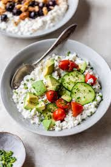

Home
Cottage Cheese Lunch

Cottage Cheese, savory style
This dish will be one of simplicity and savoriness. A low calorie meal
that is high in mouth watering goodness. Made easy with minimum cooking.
Ingredients
- Low fat cottage cheese
- Cherry tomatoes
- Salt and pepper
- 1 egg
Steps
- Slice cherry tomatoes in half
- Put half a cup of low fat cottage cheese in a bowl
- Boil water in pot
- Place egg in boiling water and let boil for 10 minutes
- Add sliced tomatoes to cottage cheese
- Peel egg shell off of egg and add to cottage cheese
- Sprinkle Salt and Pepper over dish
- Enjoy!